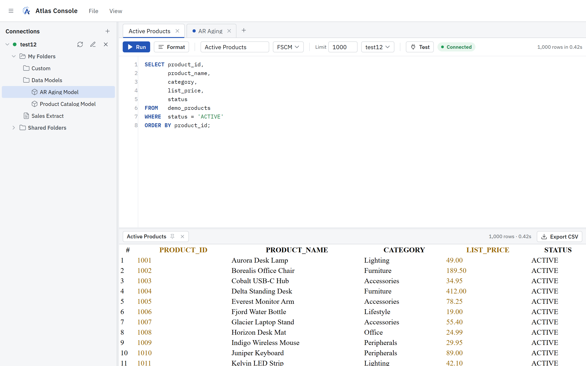
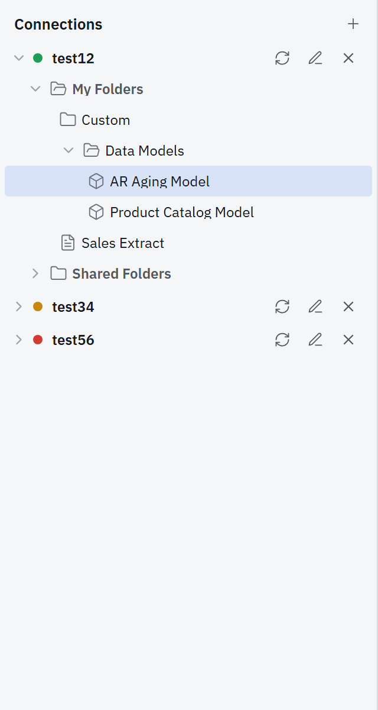
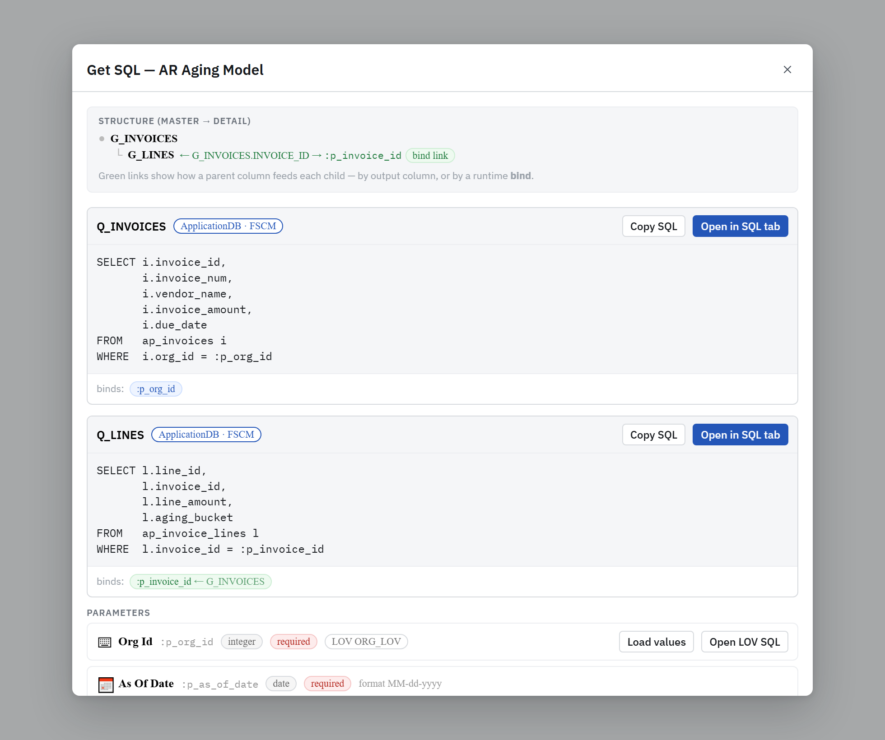
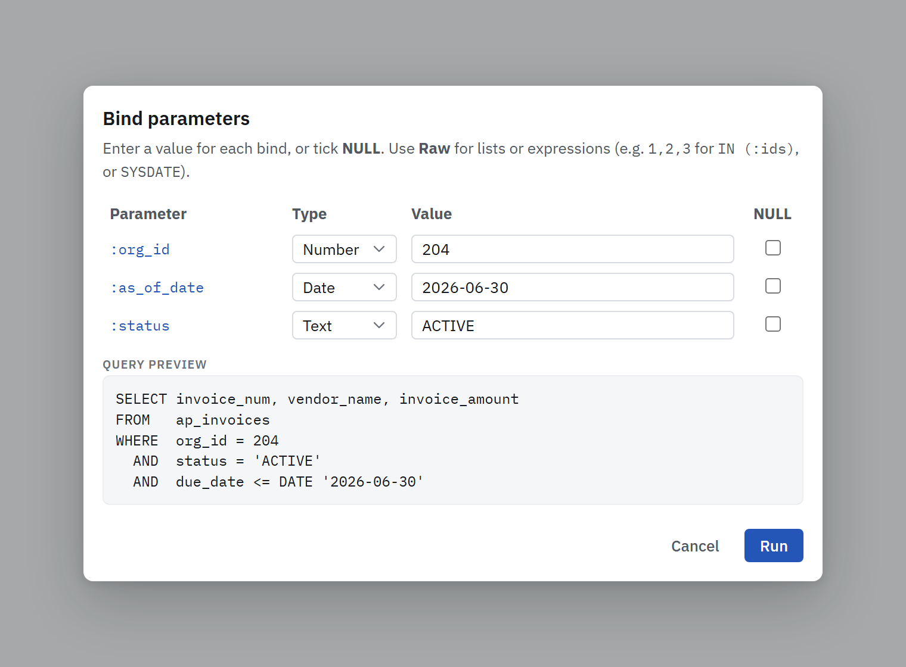
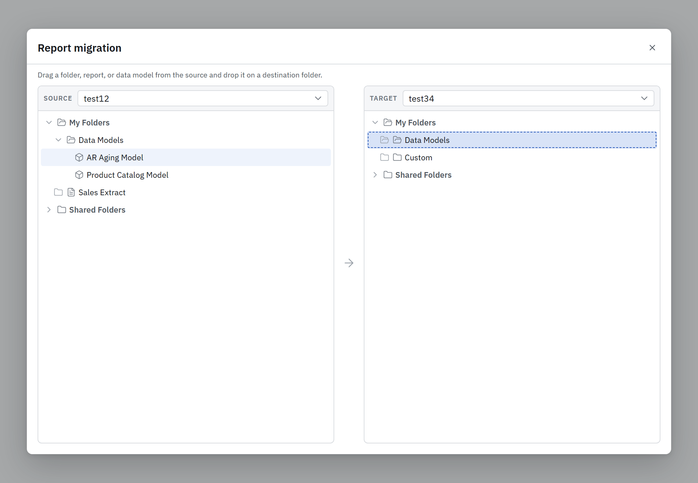

SQL for Oracle Fusion,
running on your own PC.
Atlas Console is a free, local Windows app for running ad-hoc SQL against an Oracle Fusion pod through BI Publisher. No install, no servers, nothing to set up.
v1 is available now. The download button gives you
AtlasConsole-win-x64.zip directly. Extract it anywhere and run.
Downloaded 0 times
What you get
A focused, fast SQL workbench built specifically for the Oracle Fusion BI Publisher workflow.
Ad-hoc SQL, instantly
Write SQL against your Fusion pod and get results back in a fast, virtualized table, with no report-building and no waiting.
Monaco editor
The same editor as VS Code: syntax highlighting, formatting, run-selection with Ctrl+Enter, and bind-parameter prompts.
Catalog & data models
Browse the BIP catalog tree and pull the generated SQL straight out of existing data models.
Multiple connections
Save several Fusion pods, switch between them, and keep tabs of in-progress SQL per connection.
Private by design
Everything runs on your machine. Connection passwords are encrypted at rest; nothing is sent anywhere but your own pod.
Zero footprint
No installer, no admin rights, no registry, no services. Unzip, double-click, done. Clean up by deleting the folder.
Up and running in under a minute
It works like Jupyter Notebook: a tiny local server plus your web browser.
Download & unzip
Grab AtlasConsole-win-x64.zip and extract the folder anywhere. Node.js is bundled, so you install nothing.
Double-click AtlasConsole.exe
A small console window starts the local server and opens your browser to http://127.0.0.1:4717.
Add a connection
Enter your Fusion pod URL, username, and password. Atlas Console deploys a small report bundle to your pod home automatically.
Run SQL
Type a query, hit Ctrl+Enter, and read your results. Close the console window to quit.
See it in action
A look at the real interface. These images are representations for illustration, with sample data only (no real connections or query results), and the window framing is generic; the actual app runs on Windows.
Everything in one window
Connections and the catalog on the left, a Monaco SQL editor in the middle, and a fast, virtualized results grid below: the whole tool on a single screen, running in your browser.

Save every pod, see status at a glance
Keep all your Fusion pods in one list with live status dots: green connected, amber connecting, red failed. Expand any connection to browse its BI Publisher catalog tree: folders, reports, and data models.

Lift the SQL out of any data model
Open an existing BIP data model and Atlas Console extracts every dataset's SQL, classifies its bind variables by where they come from, and maps the master → detail structure. Copy it, or open it straight in a SQL tab.

Prompts for :binds, with a live preview
When your SQL uses :bind variables, Atlas Console prompts for each value with the right type (text, number, date, or raw) and shows a live preview of the exact query sent to Oracle. No guessing.

Drag-and-drop reports between pods
Browse two pods side by side and drag a folder, report, or data model from one onto a folder in the other. A confirmation shows the exact source and target paths before anything is copied; folders recurse.

Requirements & safety
Designed to be safe to run on a locked-down corporate laptop.
Windows 64-bit
That's the only requirement. Node.js is vendored inside the package; nothing else needs to be installed.
No admin rights
Runs entirely in user space. No registry keys, no Program Files, no Windows services.
Your data stays local
Connections and saved tabs live only in %APPDATA%\AtlasConsole on your PC, with passwords encrypted at rest.
Unsigned app notice
The app isn't code-signed yet, so Windows SmartScreen may warn. Click More info → Run anyway.
Ready to try Atlas Console?
Download v1 for Windows and run your first query in under a minute.